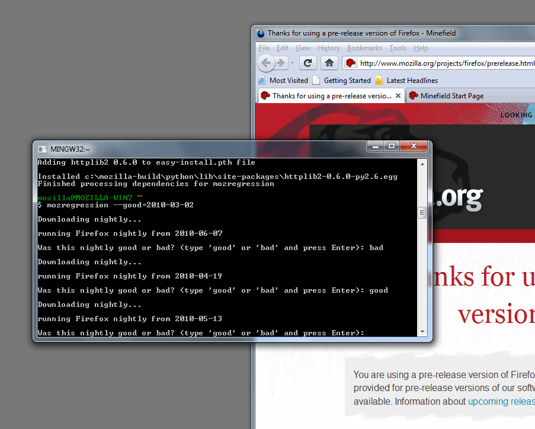

- install MozillaBuild
- Run
C:\mozilla-build\start-l10n.bat. This will give you a command-line prompt. -
Type this into the command-line and press Enter:
easy_install -U mozregression
Install or upgrade
mozregression is a Python package, installable via setuptools
or pip if you know how to do that, otherwise follow along with the OS-specific instructions (these will also work for upgrading your existing copy of mozregression, just skip the steps before using easy_install or pip):
Windows
Mac
Run these commands in the Terminal:
curl -O http://peak.telecommunity.com/dist/ez_setup.py sudo python ez_setup.py sudo easy_install -U mozregression
Ubuntu
Run these commands in the Terminal:
sudo apt-get install python-pip sudo pip install -U mozregression
How to use
Let's say you just found a bug in the current nightly build and you know that bug didn't exist in the nightly from a few months ago. You want to find the regression range of this bug (the window of commits the bug was introduced in).
To find the range run the mozregression command on the command-line
(if you're on Windows this is Mozilla Build command-line, if you're on Mac or Linux
this is the Terminal) and give it a known "good" date with the good argument:
mozregression --good=2010-03-16You can also specify the most distant known "bad" nightly date with the
bad argument.
mozregression --good=2010-03-16 --bad=2010-09-08
This will guide you through a bisection, automatically downloading and opening nightly builds from various dates (on new, clean profiles) and asking you whether the bug exists in them. After doing this a few times you'll get the regression range, something like this:
Last good nightly: 2010-09-08 First bad nightly: 2010-09-09 Pushlog: http://hg.mozilla.org/mozilla-central/pushloghtml?fromchange=36f5cf6b2d42&tochange=8e0fce7d5b49
{kind=link}
There's also a sister script, moznightly that will just download and run a nightly from a particular date:
moznightly --date=2010-07-23
Other options
Run Thunderbird nightlies:
mozregression --app=thunderbirdUse nightlies from a different repo/branch
mozregression --repo=mozilla-1.9.2Use a specific profile
mozregression --profile=/path/to/profileInstall addons
mozregression --addons="/path/to/addon,/other/addon"Forward arguments to the browser
mozregression --args="-foreground,-P"
Development
Get the code here and feel free to contribute.
Issues are tracked in bugzilla in the
mozregression component
of the testing module.